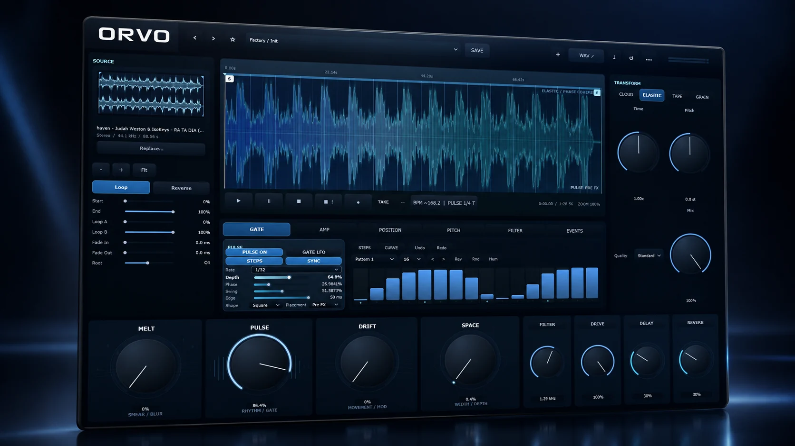
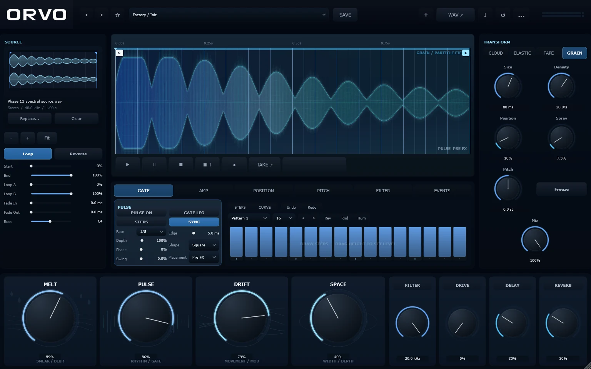

Sample transformation instrument / VST3 / Standalone
Import a sample. Stretch it, pitch it, freeze it, granulate it or warp it like tape. Cut it into rhythm with PULSE, then drag the result straight into your DAW.

ORVO is built around the moment you drop a sound into it. The four engines each do something different with time and pitch.
Spectral time-stretch and pitch that turns any sample into a sustained, evolving texture.
Phase-coherent stretching that keeps the shape of the sound while time and pitch move independently.
Speed and pitch move together, with the stop, drag and warp of a tape machine.
A particle engine with size, density, position and spray, plus a one-button freeze.
A rhythmic gate with steps, rate, depth, swing and edge. Draw 16 steps by hand and sync them to the host tempo.
MELT smears, PULSE gates, DRIFT moves and SPACE widens, with filter, drive, delay and reverb beside them.
Render the result and drag it into your DAW. Choose full length, a selection, a target time or bars, with fades and a bounded tail.
Import WAV, AIFF, FLAC or MP3 and set start, end, loop points, fades and root note.
A screenshot of ORVO 1.0 at 100 % size. The window shows the source, the processed result on the same time scale, the transform engine and the macro row.

PULSE gates the sound in steps you draw, locked to the tempo of your project. The sound window shows what the gate is doing. (Illustration of the idea.)
The installer puts the VST3 plugin and the standalone app on your machine. Prefer no installer? The release also has a VST3-only zip and a portable zip, with SHA-256 checksums.
Download for Windows